Capturas reales. Izquierda: original. Derecha: desenfoque lejano. Misma escena, cámara y hora por pareja. El coste medido del prototipo es +2,3–3,4 ms GPU en Intel UHD a 720p; no es gratuito.
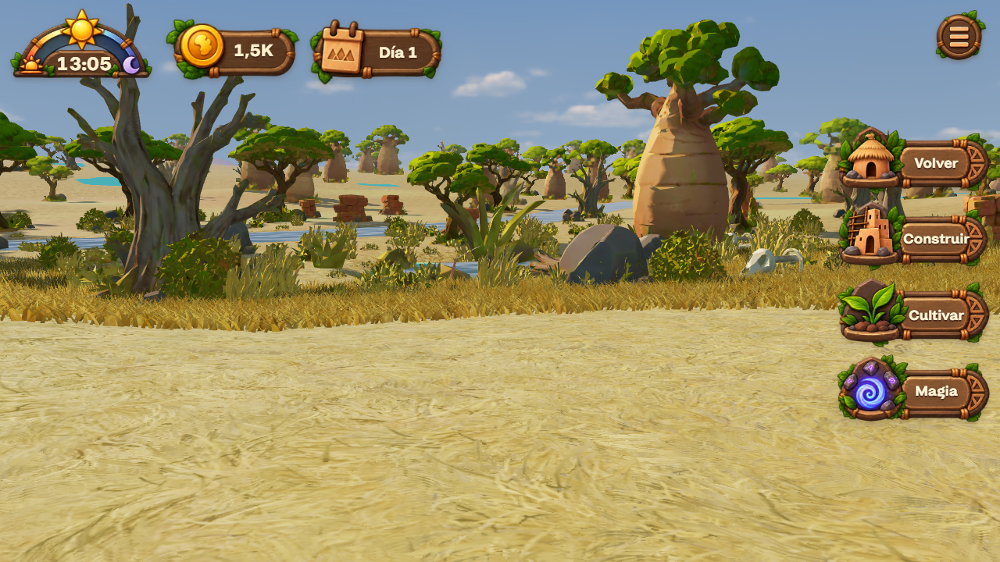
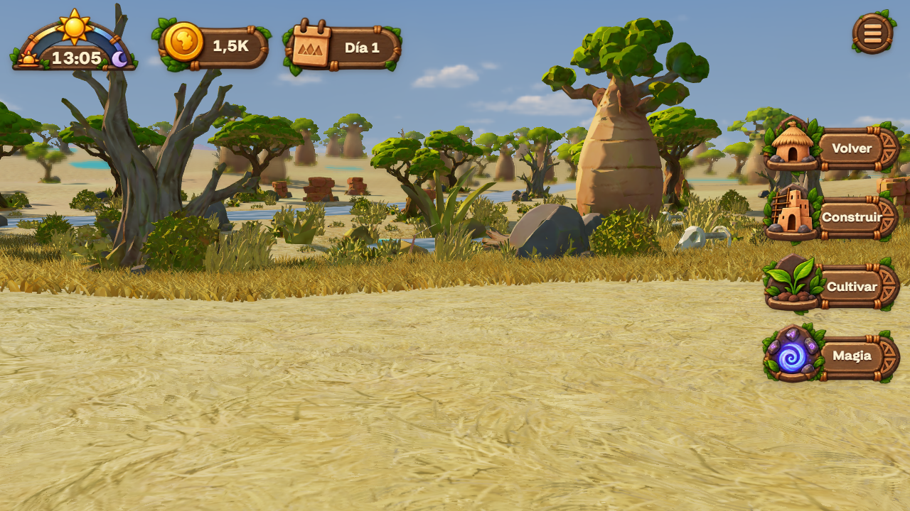
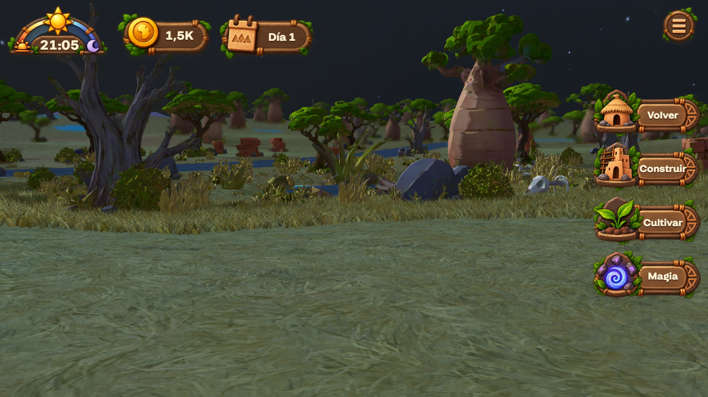
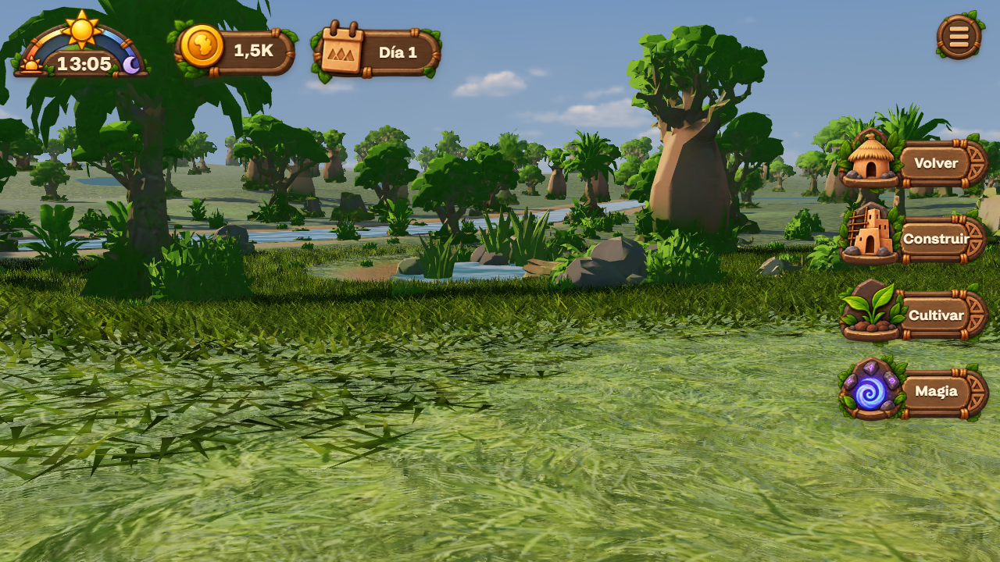
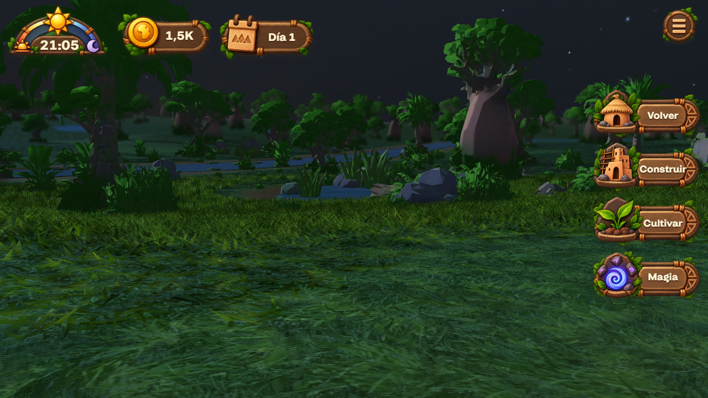
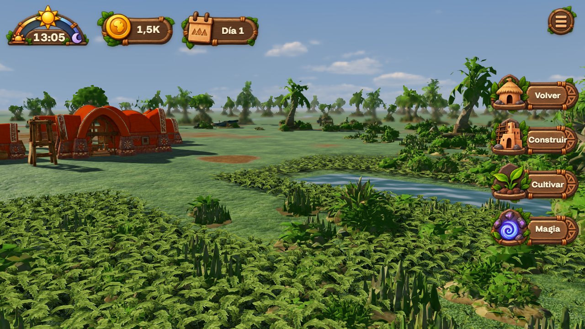
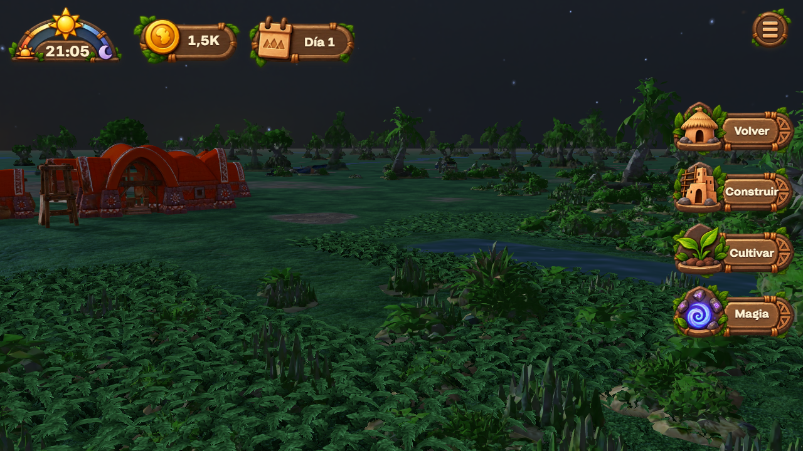
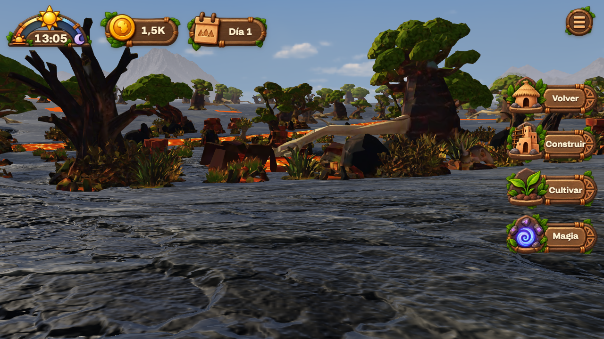
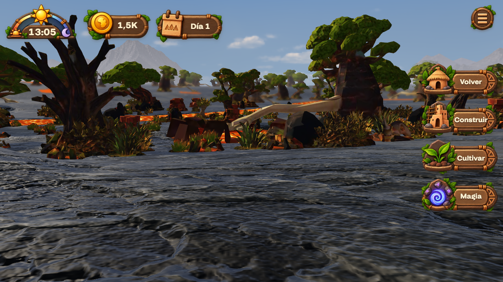
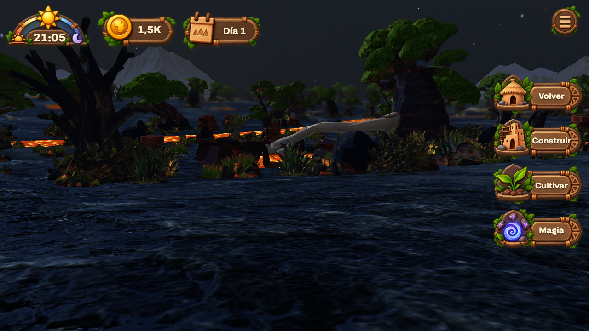
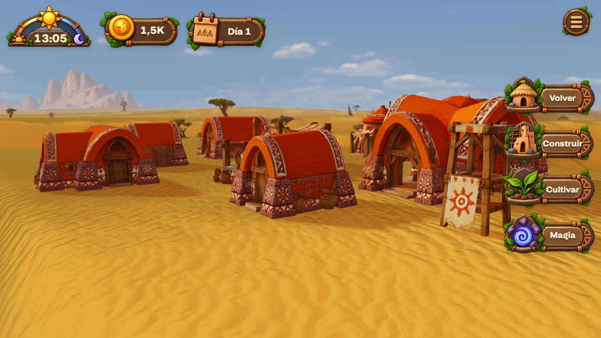
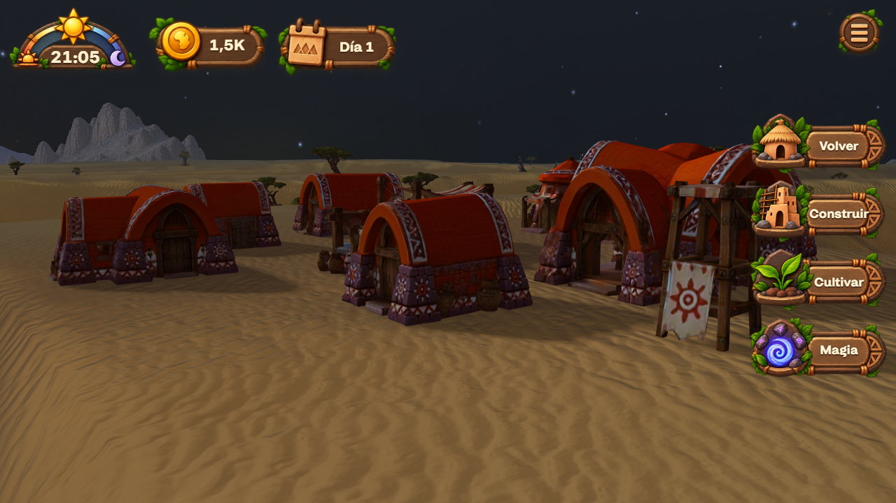
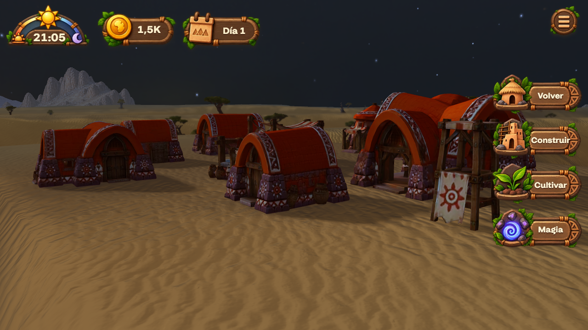
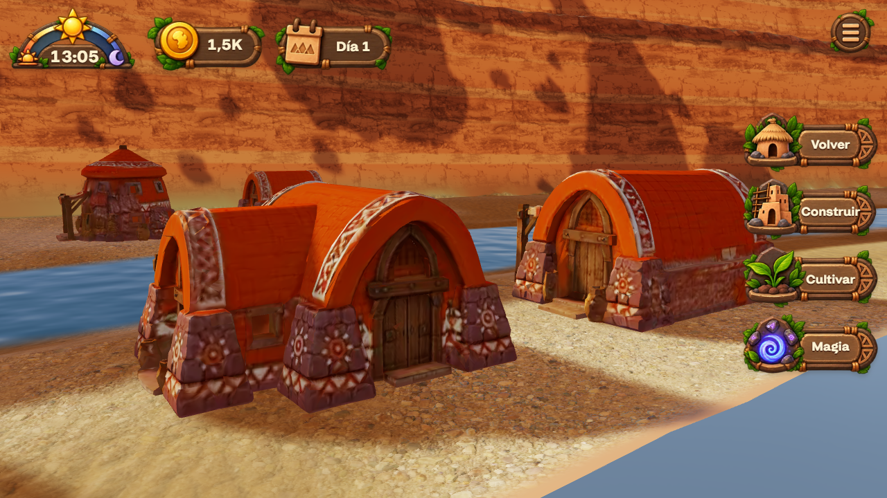
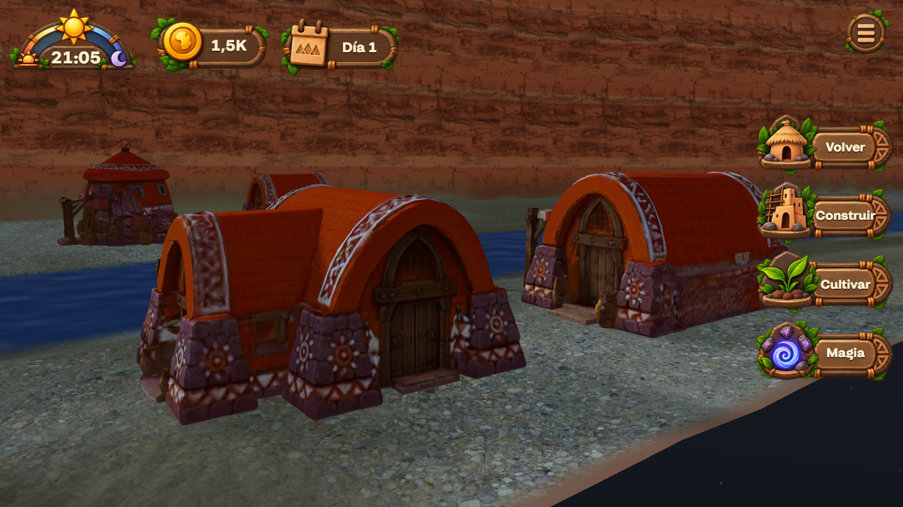